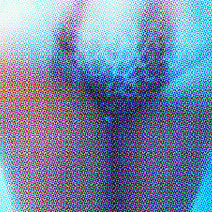
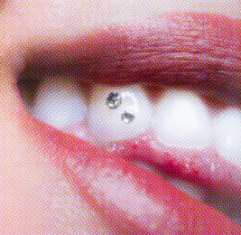
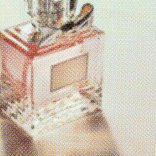

Індустрію краси можна назвати тоталітарною. Вона створює свої правила, розповсюджує їх через сотні
тисяч екранів і стежить за тим, наскільки ревно ви їх дотримуєтеся. Ми нарахували 427 категорій товарів для
краси. Чому їх так багато? Давайте розбиратись.
Очі колег чи колежанок, членів сім’ї, потенційних партнерів та навіть випадкових перехожих – всі так чи інакше
працюють на неї.
Макіяж, щоденне миття волосся, розмежування на жіночі та чоловічі парфуми й навіть гелі для душу – до всього
цього ми звикли і сприймаємо як щось апріорі нормальне. Але зростання продажів у індустрії краси відбувається за
рахунок новинок, а отже історія продовжує створюватись, а щоденні практики поповнюватись – в угоду ринку.
Гонитва за прибутком доходить іноді до абсурду. Щоб це довести й продемонструвати, наскільки сьогодні розрісся
ринок бьюті-сфери, ми відкрили найбільший в Україні інтернет-магазин косметики та товарів для здоров’я й
ретельно дослідили представлені в ньому продукти – 140 тисяч оригінальних назв від 3500 брендів.
Всі товари на сайті ретельно розбиті на підкатегорії. Видалили зайве, отримали 427 категорій. Їх і аналізували.
Один зі способів продати більше – розділити товари на різні категорії. Для чоловіків і жінок, дітей і дорослих,
25+ та 45+. Або для рук і ніг, всього обличчя й окремо для зони під очима. Чим більше таких категорій, тим
більше типів товарів споживає покупець. Зараз хочеться жартувати про косметику для другої фаланги пальців лівої
руки. Проте іноді здається, що так жартувати вже запізно. Не вірите? Зараз продемонструємо.
Всю продукцію на ринку краси можна розділити відповідно до частин тіла, для яких вона призначена.

За кількістю товарів найбільша пропозиція для догляду за шкірою всього тіла (35 тисяч назв, що складає трохи
більше 25% від усіх товарів).
Плюс близько 10 тисяч товарів окремо для різних частин тіла:
- шиї
- грудей
- рук (та окремо нігтів)
- інтимної зони
- ніг
- та місць, де росте волосся, яке слід видалити
Трохи менше (27,5 тисяч найменувань, 20,5% від усіх товарів) товарів для догляду за шкірою обличчя. Та ще 19
тисяч назв – спеціальні засоби для його частин:
- вій
- зубів
- носа
- губ
- брів
- зони навколо очей
- і волосся на обличчі (щоб його видалити чи перетворити на стильну бороду).
Окремо представлені товари для волосся (18% від усіх товарів) та парфуми (16%).
Кількість товарів
Наведіть на зображення, щоб побачити категорію і кількість товарів в ній.




В кожній групі товарів є багато категорій. І хоч окремо для носа поки пропонують тільки смужки, а для зони
декольте – крем та маску, інші категорії наповнені набагато більше.
Наприклад, для рук (крім звичного всім крему) ринок пропонує ще додати: бальзам, пілінг, маску, лосьйон,
сироватку, молочко, гель, вершки, ванну, скраб, піну, олію, спрей, мус і ексфоліант.
До речі, якщо ви хоч раз відчували легкий дискомфорт від незнайомих назв – наприклад, не знаєте, що то за слово
таке «ексфоліант», або чим він відрізняється від скрабу чи гоммажу – ви не самотні. Поповнення словникового
запасу паралельно з розвитком індустрії – звична річ. Було б дивно зараз висміювати поширення слів «смартфон» чи
«репост». Проте в індустрії краси поява нових слів часто спричинена спробами продати те саме, але "красивіше".
Не скраб, а ексфоліант механічної дії, не тональний засіб, а кушон.
Не скраб, а ексфоліант механічної дії, не тональний засіб, а кушон.
Спробуйте вгадати, чи це слово – продукт на ринку краси,
чи термін зі сфери фортець або суднобудівництва:
Беффруа = міська башта в багатьох містах Північно-Західної Європи доби Середньовіччя.
Інша особливість ринку краси – спроба продати вам те саме, але зі «смачнішою» назвою.
Так, гель для душу (який, до речі, свого часу майже витіснив мило) пропонують замінити піною, муссом або навіть
суфле для тіла. Піною для ванни нікого не здивуєш, але хто не хоче себе побалувати перлами, намистинками чи
бурхливими кульками для ванни?
Або ж використовують «красиві» слова, що насправді відірвані від продукту та часто навіть не дають зрозуміти, що
це за засіб. Найпопулярніші: флюїд, есенція, емульсія, еліксир. Флюїдом, наприклад, можуть називати крем для
обличчя, кондиціонер для волосся чи навіть гель після депіляції.
Флюїдом можуть називати крем для обличчя, кондиціонер для волосся чи навіть гель після депіляції
Ще одна стратегія примусити купувати більше – збагатити наші щоденні процедури. Нові засоби «втискуються» між
звичними практиками.
Користувались лише кремом для обличчя? Проте «вік бере своє» і тепер до нього придбали крем для зони під
очима.
Маленький крем для рук, «як виявляється», ідеально пасує до жіночої сумочки, а отже, тепер ви ним користуєтесь на
роботі чи під час прогулянки.
Раніше ви змивали косметику, протирали обличчя лосьйоном та наносили крем? А тепер між лосьйоном і кремом
з’явився бустер. До речі, саме слово «бустер» (від англ. «посилювати», «прискорювати») натякає, що він буває не
лише для обличчя, а, наприклад, і для волосся чи нігтів. Хоча іноді бустер стає просто «красивим» словом
(«Туш-бустер для об’ємних вій» або «Багатофункціональний рідкий бустер-блиск для макіяжу обличчя»).
Одна з найбільш специфічних сфер – декоративна косметика для контурингу обличчя. Сфера, що колись належала
професіональним візажистам, проте з поширенням бьюті-блогерів та інтернет магазинів, які в один ряд виставляють
масову та професійну косметику, примушує сучасних жінок розбиратись, що таке консилер, хайлайтер і бронзер. Чи
хоча б чим відрізняється BB-крем від СС-крему.
Ми нарахували 27 різних категорій товарів для роботи з тоном шкіри обличчя. Виявляється, навіть «звичайний
тональник» називають по-різному: тонер для обличчя, тональний флюїд, тональна основа чи тональний мусс.
Уявіть лише, скільки часу та зусиль потрібно жінкам, щоби розібратись в цих засобах та навчитись ними
користуватись. І це ще не кажучи про багатство асортименту та різноманіття цінових пропозицій.
ВСІ КАТЕГОРІЇ КОСМЕТИКИ: використвуйте zoom, щоб роздивитися
Так уже історично склалось, що ринок індустрії краси орієнтований саме на жінок. Чого лише варта наявність в
інтернет-магазинах окремої категорії «Чоловікам» поряд із категоріями «Волосся», «Обличчя» та «Тіло і
ванна».
Чого лише варта наявність в інтернет-магазинах окремої категорії «Чоловікам» поряд із категоріями «Волосся», «Обличчя» та «Тіло і
ванна».
І хоч більшість товарів на ринку формально залишається унісекс і підходить як жінкам, так і чоловікам, виключно
жіночих товарів в 15 разів більше, ніж виключно чоловічих. Що не дивно – жіночі товари зазвичай стосуються
декоративної косметики, яку абсолютній більшості чоловіків (як це не прикро для основних гравців ринку краси)
поки нав’язати не вдалось.
Може навіть здатись, що чоловіче тіло не так сегментоване, як жіноче. Згадується щось на кшталт 3 в 1 – коли в 1
флаконі одразу гель для душу, шампунь та кондиціонер. Але ринку таке поєднання невигідне. І чим далі, тим більше
створюється товарів для чоловіків. Тепер перелік чоловічих товарів не обмежується засобами для гоління,
антиперспірантами та лінійкою чоловічих гелів для душу.
Найяскравіший приклад відносно нового сегменту ринку, що росте в Україні паралельно з барбершопами, – товари для
догляду за бородою. Щойно волосся на обличчі відокремили від волосся на голові, з’явилась можливість придбати
шампунь для бороди. А якщо є шампунь для бороди, то ніщо не заважає доповнити його бальзамом, олією, сироваткою,
воском і кондиціонером.
Так само у жінок на обличчі «віднайшли» брови. Раніше «достатньо» було стежити за їхньою формою, фарбувати та в
деяких випадках розчісувати. Тепер волосся над очима, як виявляється, теж може потребувати гелю, сироватки,
олії, воску й муссу. А якщо його колір, форма чи масштаби вас не задовольняють, є можливість придбати як
звичайні олівці, тіні, хну чи туш для брів, так і більш оригінальні тінт, помаду, пудру, маркер, підводку чи
коректор. Або взагалі накладні брови (накладні вії ж користуються попитом, то чом би й ні?)
у жінок на обличчі
«віднайшли» брови
ВАРТІСТЬ БАЗОВОГО КОШИКА
Звичайно, серед величезного різноманіття пропозицій є товари, що стали якщо не життєво необхідними, то майже
обов’язковими для догляду за собою. Важко знайти людину без зубної пасти, мила чи крему для обличчя. Тому серед
усіх 430 категорій ми обрали ті, що є майже в кожній домівці (принаймні, так вважає більшість нашої редакції).
Об’єднали деякі з них (наприклад, піну та гель для гоління) і отримали 30 товарів. А потім 1000 разів випадковим
чином «зібрали» цей набір для кожної цінової категорії.

Мінімальна можлива вартість такого набору – близько 1000 грн. Але в середньому економні покупці (що купують
товари в найнижчій ціновій категорії) витратять 1616 грн. Якщо прибрати з кошика парфуми, вартість зменшиться,
хоч і не суттєво – в середньому на 100 грн.
Менш заощадливі покупці (які обирають товари ціною трохи нижче середнього) на такий кошик витратять близько 3700
грн.
Але на ринку є пропозиція і для тих, хто готовий купувати найдорожче. Якщо обирати серед товарів, що входять до
найдорожчих 25%, мінімальна вартість базового косметичного набору становитиме 15 тисяч грн, максимальна – 40
000.
Серед найдорожчих товарів більшість – ті, що призначені для догляду за шкірою обличчя. В десятці найдорожчих
товарів – лише одні парфуми, інші 9 – для обличчя. Очолює рейтинг інтенсивна відновлювальна програма для обличчя
вартістю 45 тисяч грн.
Трохи веселощів
Деякі категорії товарів вразили. Зі зміною мови сайту на українську, назви категорій, прикріплені до товарів,
залишаються російськомовними. Тому далі наводитимемо їх мовою оригіналу.
Деякі категорії з першого погляду видаються абсурдними:
- «Грязь для лица»
- «Желе для лица» (зазначимо, що є також «Желе для волос» та «Желе для тела»)
- «Глина для волос»
Деякі здались якщо не смішними, то відверто дивними – якщо проводити асоціації з більш звичними значеннями
слів:
- «Порошок для волос»
- «Патчи для ног»
- Пудра для ногтей»
- «Гель для век»
- «Маркер для бровей»
- «Кристаллы для волос»
- «Суфле для тела»
- «Жемчужины для ванны»
- «Клей для волос»
- «Жидкие колготки»
Деякі категорії товарів для догляду за обличчям з першого погляду не асоціюються із доглядом саме за
обличчям:
- «Паста для лица»
- «Порошок для лица»
- «Капли для лица»
- «Крем-краска для лица»
- «Иллюминатор для лица»
- «Нейтрализатор для лица»
Можливості перечитати всі назви товарів (а їх, нагадаємо, більше 100 тисяч) у нас не було, проте деякі з них ми
оминути увагою не змогли. Ось лише декілька:
- Заполнитель морщин мгновенного действия (смішно, поки не почнеш читати про філери)
- Гидрогелевые патчи для губ с экстрактом жемчуга (не знаємо, що повеселило більше – патчі для губ чи екстракт
з перлів)
- Коктейль для разглаживания морщин вокруг глаз (а хіба коктейлі – це не для іншого?)
- Капли ДНК защита (секрет успіху – всюди додай згадку про ДНК)
- Концентрированные капли со скрабирующим эффектом (краплі з крихтами?)
- Маска для ног (можливо, наявна й маска ніг Дональда Трампа або єті?)
- Крем для ног «хурма не вяжет, хурма шьет» (пишуть, що до складу входять «свежая гавайская хурма и
органическая шелковица», а виготовлено в Росії)
- Скраб із лушпиння насіння баобаба (залишилось дізнатись, чим він кращий за абрикосові кісточки)
Детальніше про методологію
В нашому дослідженні ми звертались до сайту makeup.com.ua. За даними спецпроекту «Е-commerce UA», він має більше половини ринку серед усіх інтернет-магазинів косметики та товарів для здоров’я в Україні.
До аналізу увійшли лише категорії сайту, що включають косметичні засоби для догляду за собою: Парфумерія, Макіяж, Нігті, Волосся, Обличчя, Тіло і ванна, Чоловікам, Health & Care.
Аналізували й ті товари, яких немає в наявності (на момент збору даних не було 36% товарів).
Видалили все те, що не характеризує безпосередньо косметичні засоби. Наприклад, знехтували наборами, пробниками, тестерами, інструментами, насадками, товарами для дому та одягу ( в тому числі ароматизаторами для автівки, аромасвічками, усякими штуками для взуття, аромалампами тощо) та іншими специфічними товарами – як, наприклад, трафаретами для татуювань, шовковими коконами (так, вони теж продаються!) чи аквагримом.
Дивились лише на оригінальну назву, а різними об’ємами та кольорами знехтували.
Склад базового кошика: лосьйон / тонік для обличчя, крем для обличчя, гель для вмивання, міцелярна вода, кондиціонер для волосся, шампунь, маска для волосся, крем / лосьйон / бальзам після гоління, маска для обличчя, крем для рук, крем для тіла, мило, скраб для тіла, гель для душу, парфуми / туалетна вода / парфумована вода, бальзам для губ / гігієнічна помада, скраб для обличчя, спрей / масло для волосся, дезодорант / антиперспірант, крем сонцезахисний, пінка / гель для інтимної гігієни, піна для ванни, піна / гель для гоління, крем / бальзам для ніг, зубна паста, лак для волосся, ополіскувач для порожнини рота, дитячий крем, зубна нитка.